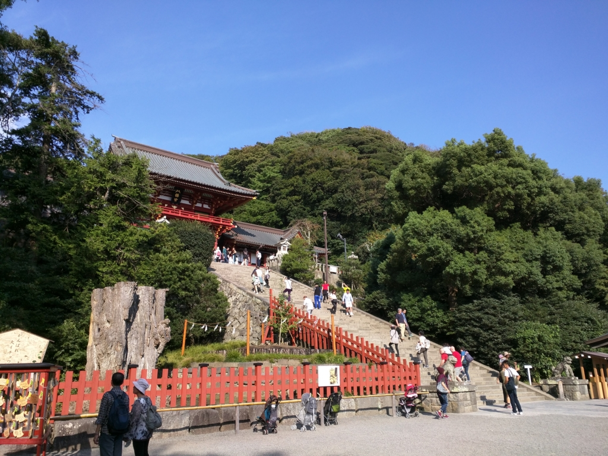
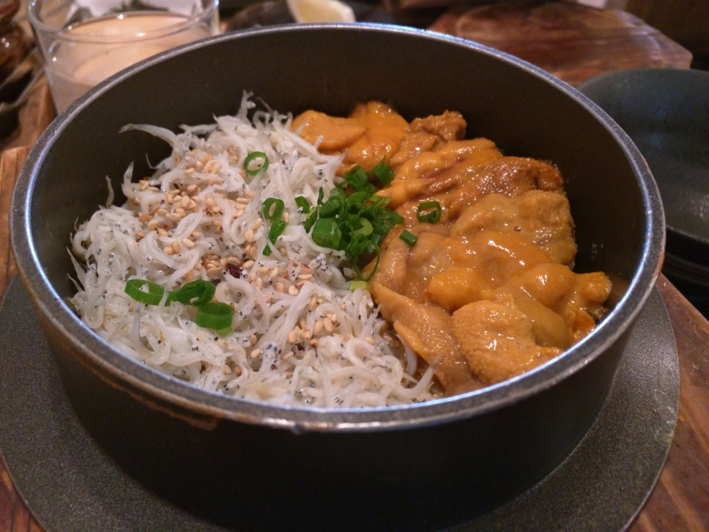
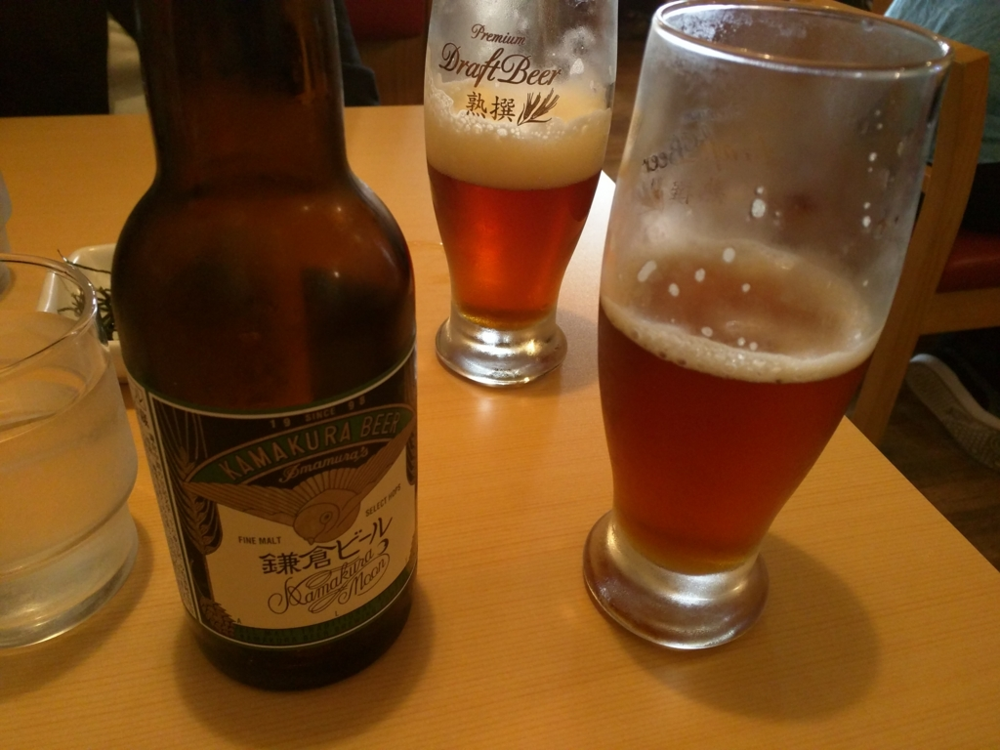
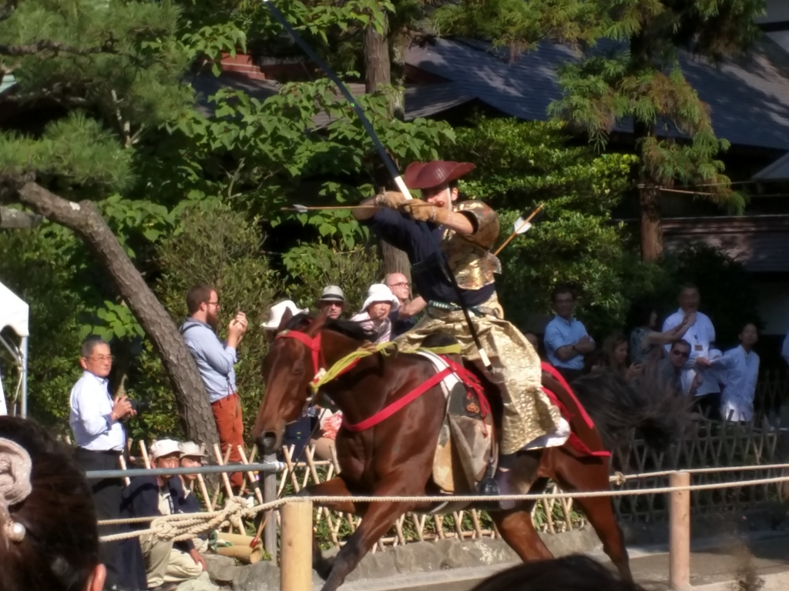
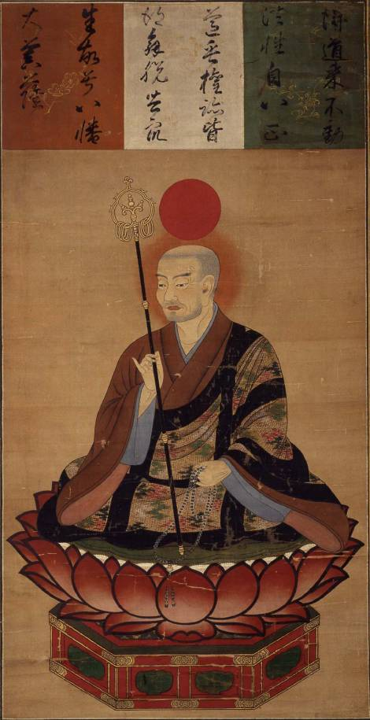
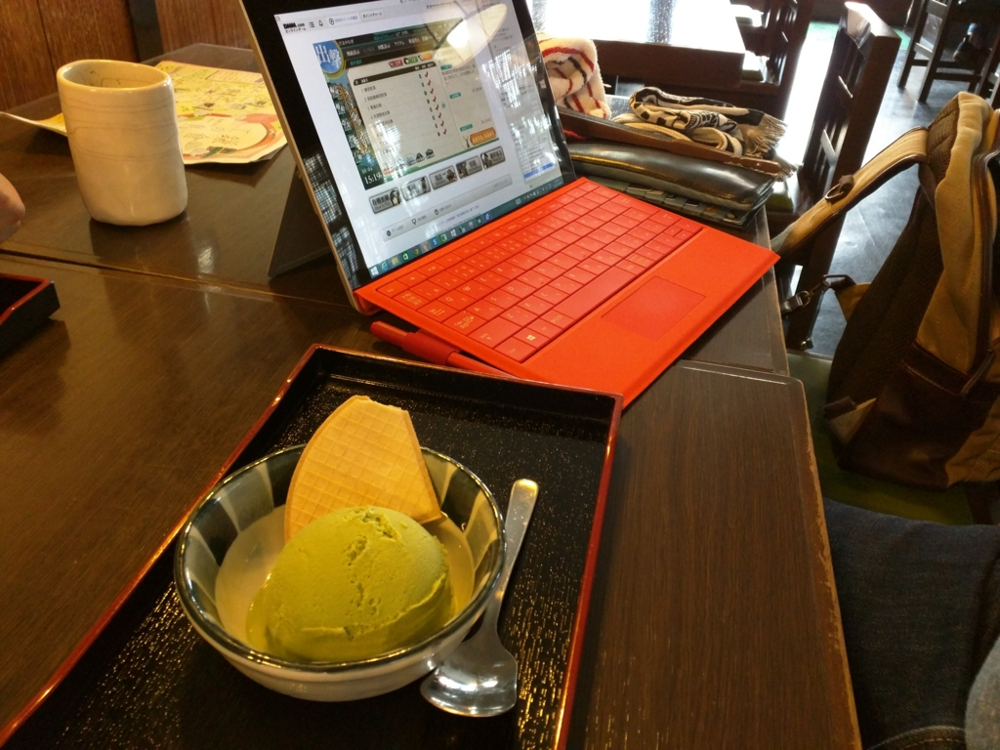
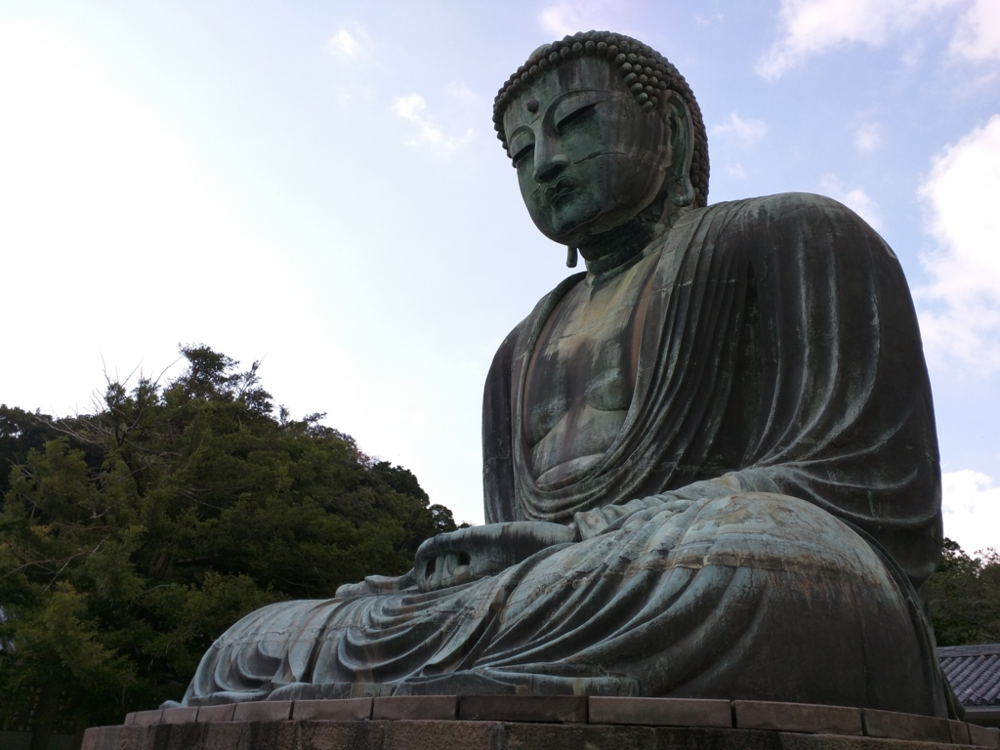
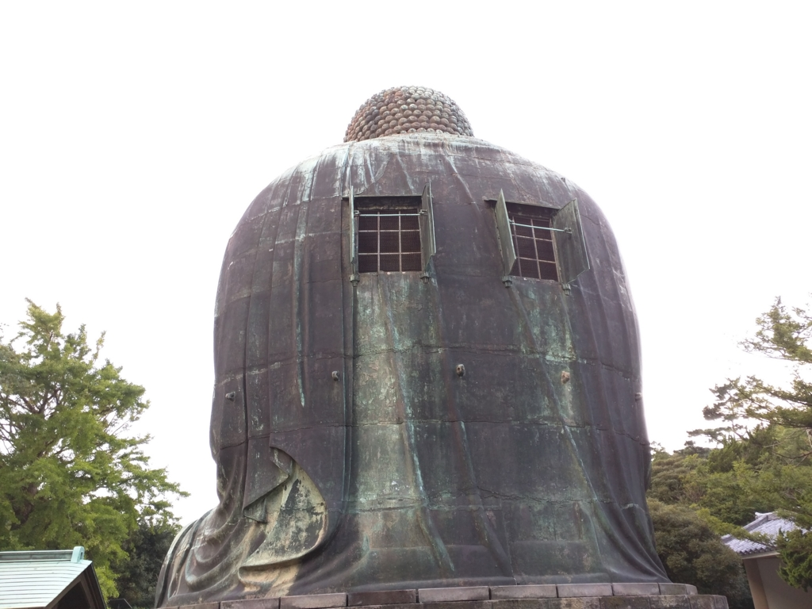

フラっと鎌倉行ったら流鏑馬やってた。あと、大仏に穴が開いてた
執筆日時：

週末、フラっと鎌倉へ出かけた。土方の仕事とかで近くに行ったことはあるけれど、観光で訪れるのは生まれて初めて。
鎌倉というと、個人的には歴史のイメージが強いのだけど（とはいえ、『太平記』も吉川英治でしか知らんが。『平家物語』に至ってはいまちょろちょろ読んでるところだ）、どっちかっていうと今はオシャレスポットらしい。歩いていて、若干肩身が狭い。
釜めし

着いたのが昼時だったので、まずは釜めしで腹を満たすことにした。しらすとうにの二色丼！ 残念ながら“生しらす”はなかったのだけど、2,000円しただけあって割とおいしかった。ぶっちゃけ、生しらすがないのならば松山で食ったほうがコスパは高いが、それはそれ、これはこれ。鎌倉へ出かけて食うことに意味があるのだ。

あと、釜めしが出てくるまでに時間がかかったので、仕方なく鎌倉ビールを注文した。鎌倉ビールには「月」「花」「星」の三種類があるそうだが、アルトタイプの「月」をチョイス。ペロッと2本飲んじゃうぐらいおいしかった（釜めしがすぐに出てこないのが悪いと思う！）。ついでにクジラの竜田揚げも頼んだが、こっちもイケる。シーシェパードもまっしぐらだ。
流鏑馬
とくにどこかへ行きたいという希望はなかったのだけど、鶴岡八幡宮ぐらいはみておくべきだよね。
ちなみに八幡の神様っていうのは、応神天皇（誉田別命、ほんだわけのみこと）のことらしい。身重の神功皇后が朝鮮へ渡ったとき、おなかの中にいた子供だね。源氏にとってはご先祖様でもあるし、肝っ玉母ちゃんとともに武をつかさどる神さまである点も、武門の棟梁家の氏神にふさわしい。

やたら人が多いなーと思ったら、たまたま流鏑馬をやっていた。生まれて初めて流鏑馬を生で見たのだけど、想像以上の迫力だった。

流鏑馬って、馬がパカラッパカラッ、弓ひょろ～んバスーン！ っていうイメージだったのだけど、そんなことないのな。掛け声が聞こえてきたかと思うと、一瞬でドドドッと駆け抜けていった。
上の写真は Nexus 6 で撮ったのだけど、ぜひ Youtube のビデオも見て、これが奇跡の一枚であることを知ってほしい（ほかにも何枚か撮ってたのだけど、馬が速すぎて全部ブレてしまった）。スマートフォンのデジタルズームにしてはなかなかじゃないだろうか。おかげでテンションが上がってしまった。
あとは宝物殿（入場200円）で鎧と十二単をみた。割と展示はしょぼめだったけれど、僧形の八幡神は面白かった。
それにしても人が多い。鎌倉駅へ戻る途中、疲れたので甘味処で抹茶アイスを食べた。ついでに Surface 3 を広げて、艦これの遠征をこなす。

大仏

まだ時間があったので、大仏も見に行ってあげた。奈良の大仏をみたことあるマンとしては、とくにわざわざ見る意味もないかとも思ったけれど、この大仏、実は中に入れるらしいんだよ。20円かかるけど。大仏の中は狭くて、人の行き違いも大変だ。しかも胎内はとても暑くて、のぼせそう。

「なんで背中に穴あいてんだよｗｗｗ」と思っていたのだけど、納得の仕様だ。カバーがあるのは、きっと雨の日は閉めるからなんだろうな。大仏の中身が洪水だなんて、あんまり笑えないしね。
今日はだるいので、これでおしまい。